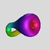

The following StageManager script uses CenterStage to generate and manipulate a parametrized Klein bottle.

The Klein Bottle in StageManager:The script asks CenterStage to start and load the file containing the Klein bottle (this file follows the script below), then select the "Klein" object in that file. The next four lines set up the background color and the initial viewpoint. The
Loopcommand causes the main action for the script: a value between .15 and 1 is computed (depending linearly on the iteration count of the loop), and CenterStage is asked to set its slider to that value (thewslider controls how much of the surface to show). A frame is taken automatically at the end of each iteration of the loop.
Klein.smCenterStage Start CenterStage File "Klein.cs" CenterStage ::cs::GUI Display "Klein" Background {0.855 0.855 0.855} Transform {Scale .8} Transform {Translate {-.2 0 0}} Transform {XZ $pi/4} Loop 35 { set n [Percent .15 1] CenterStage Klein Slider w Set $n }
Klein.csScript:
Domain {{pi/4 w*9pi/4 int(20w)+1} {-pi pi 10}} Function {t u} { if {$t < 5*$pi/4} { let X = ( cos t, a (sin(2t) - 1) / 2, 0) let V = (-sin t, a cos(2t), 0) let U = B >< Unit(V) let (x,y,z) = X + c cos(u) U + c sin(u) B } else { let r = c + a (1 + sin(2t - 3pi))/2 let (x,y,z) = (cos t, r cos u, r sin u) } } let B = (0,0,1) ColorFunction NormalizedT {(t-pi/4)/(2pi)} Slider a 0 1 .5 Slider c 0 1 .15 Slider w .1 1Menus Settings:
- Domain should be Patch with Wrap / u checked,
- Color should be By Function / NormalizedT,
- Color / Normalize should be unchecked, and Color / Wrap Colors should be checked,
- Appearance should have Shading / Smooth checked.
This piecewise parameterization of the Klein bottle is due to Thomas Banchoff.
|
|